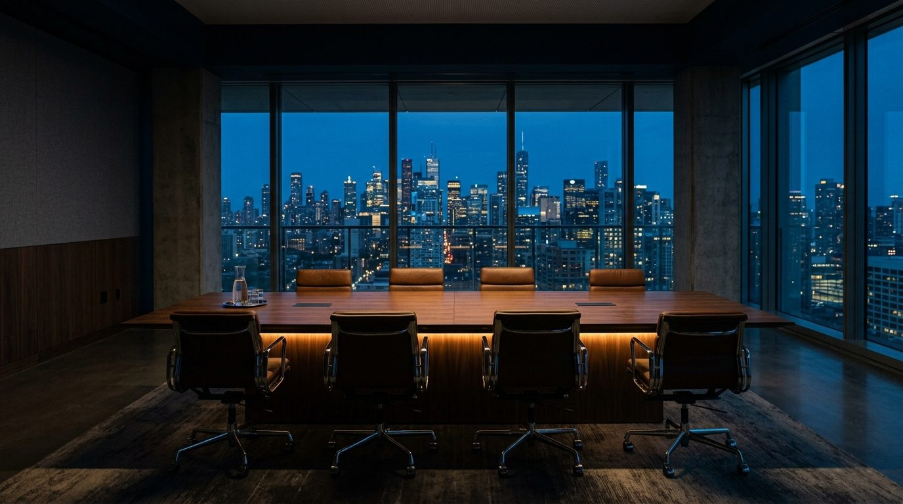
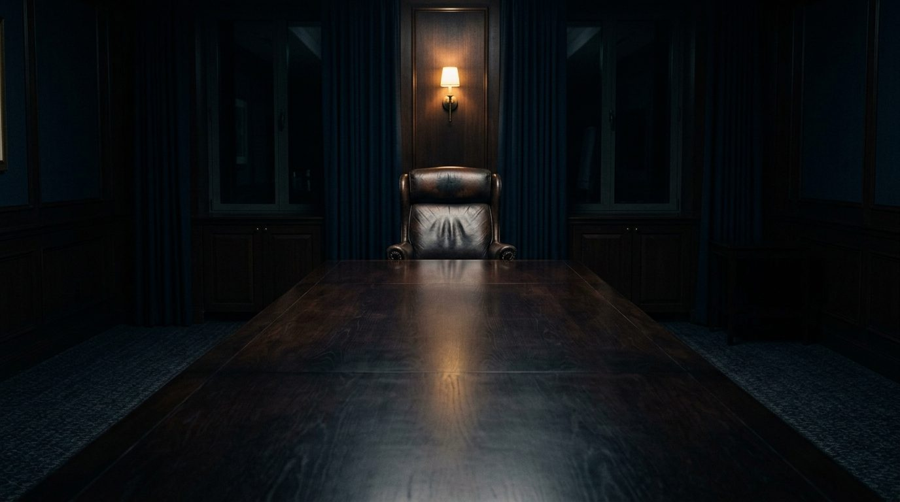

01
La calidad del proceso decisional predice el resultado mejor que la calidad del análisis. Es una variable de gestión, no un rasgo de personalidad.
02
El ruido entre directores existe, es cuantificable y cuesta dinero. Medirlo es el primer acto de gobierno corporativo real.
03
Pre-mortem, contradictor formal, voto confidencial previo, bitácora. Prácticas de bajo costo y efecto documentado.
39%
Base documental de Hyperion: Lovallo & Sibony (McKinsey Quarterly) · Kahneman, Sibony & Sunstein · Flyvbjerg · Malmendier & Tate (NBER).
+6,9pp
Base documental de Hyperion: Lovallo & Sibony (McKinsey Quarterly) · Kahneman, Sibony & Sunstein · Flyvbjerg · Malmendier & Tate (NBER).
55%
Base documental de Hyperion: Lovallo & Sibony (McKinsey Quarterly) · Kahneman, Sibony & Sunstein · Flyvbjerg · Malmendier & Tate (NBER).
28%
Base documental de Hyperion: Lovallo & Sibony (McKinsey Quarterly) · Kahneman, Sibony & Sunstein · Flyvbjerg · Malmendier & Tate (NBER).
Tres líneas de servicio
Instrumento de 45 ítems que cada director responde por separado. Entrega el Índice de Vulnerabilidad Decisional, el Índice de Ruido entre directores y un plan 30/60/90.
Rediseño del ciclo de asignación de capital: clase de referencia, contradictor formal, voto confidencial previo, criterios explícitos, bitácora de decisiones.
Presencia fraccional en comité y directorio: disciplina financiera más higiene de decisión.
Maqueta de propuesta. El botón no tiene destino: el brief no declara correo, teléfono ni enlace de agendamiento públicos.